Think IT（シンクイット）
https://thinkit.co.jp/
【Think IT】“オープンソース技術の実践活用メディア” をスローガンに、インプレスグループが運営するエンジニアのための技術解説サイト。開発の現場で役立つノウハウ記事を毎日公開しています。
フィード
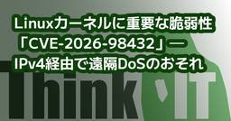
Linuxカーネルに重要な脆弱性「CVE-2026-98432」─ IPv4経由で遠隔DoSのおそれ
Think IT（シンクイット）
Linuxカーネルに重要な脆弱性「CVE-2026-98432」─ IPv4経由で遠隔DoSのおそれ 認証なしで攻撃可能、確認の上アップデートをkawahara2026年10月31日シェア ポスト はてブ 優先するニュース提供元に追加 Linux kernel CVE teamは10月15日(現地時間)、IPv4のTCP処理における脆弱性「CVE-2026-98432」について注意喚起を発表しており、その後、各セキュリティベンダーなどが注意を呼びかけている。 「CVE-2026-98432」は、TCP接続要求を処理するLinuxカーネルのIPv4ネットワーク機能に存在するuse-after-freeの脆弱性。認証されていない遠隔の攻撃者が、外部へ公開されたTCPサービスに細工した通信を送ることで、カーネルクラッシュやメモリー破壊を引き起こす危険がある。 TCP接続要求を受け取ったLinuxカーネルは、要求ソケットが保持するIPv4オプションを新しい接続用ソケットへ引き継ぐ。この際、別のCPUが同じ接続要求の再送SYNを並行して処理すると、SYN/ACKパケットの生成中に参照しているオプションが解放される競合状態が発生する可能性がある。 修正版では、IPv4オプションを直ちに「kfree()」で解放するのではなく、RCUの猶予期間が終了して、ほかのCPUから参照されていないことを確認してから解放する「kfree_rcu()」へ変更された。 CVSS評価は、CVE.orgやUbuntuでは9.8、深刻度「Critical」と非常に高い。 同脆弱性のLinuxカーネルにおける各系列の最初の修正版は、Linux 7.2.10/6.18.56/6.12.113/6.6.159/6.1.190/5.15.223/5.10.272、およびLinux 7.3以降。10月30日に公開されたLinux 7.3.1、7.2.14、6.18.60などにおいては、この修正が適用済みとなっている。また、Linux 7.3では正式リリース前の7.3-rc7で修正されている。ユーザは情報に注意の上、必要に応じてアップデートを適用することが強く推奨される。(川原 龍人/びぎねっと)[関連リンク]CVE-2026-98432(Linux kernel CVE team) CVE-2026-98432(
21時間前
地球上の「まっすぐ」を理解してST_Touches()の意外な判定結果の謎を解こう
Think IT（シンクイット）
地球上の「まっすぐ」を理解してST_Touches()の意外な判定結果の謎を解こうitoh2026年10月30日MySQLで学ぶGIS入門シェア ポスト はてブ 優先するニュース提供元に追加 はじめに前回は、基準ポリゴンの下の辺にぴったり接するように作ったはずのポリゴンが、ST_Touches()で 0(FALSE)と判定される動作を紹介しました。一見接しているように見えるこのポリゴンが接していないというのはどういうことなのか。「まっすぐ」とは何かというテーマを軸に、読み解きます。前回のおさらい今回のテーマに関係する2つのポリゴンを示します。@polyが基準ポリゴン、@poly4がその下辺に接するつもりで作った対象のポリゴンです。mysql> SET @poly = ST_GeomFromText( -> 'POLYGON((35 135, 35 135.01, 35.01 135.01, 35.01 135, 35 135))', 6668);mysql> SET @poly4 = ST_GeomFromText( -> 'POLYGON((34.996 135.006, 34.996 135.011, 35 135.011, 35 135.006, 34.996 135.006))', 6668);青い色の基準ポリゴンに対して、その下辺に赤い色の小さなポリゴンが接しているように見えます。この2つのポリゴンに対する ST_Touches()とST_Overlaps()の結果です。mysql> SELECT ST_Touches(@poly, @poly4) Tch, -> ST_Overlaps(@poly, @poly4) Ovl;+------+------+| Tch | Ovl |+------+------+| 0 | 1 |+------+------+1 row in set (0.000 sec)「接しているように見える」という直感に反して、この2つのポリゴンは Touch(接触)しておらず、Overlap(重なり)しているという結果を得ました。MySQLが壊れているのでしょうか。いいえ、これには理由があるのです。 「まっすぐな線」とは何かその謎を紐解くために、地球上での「まっすぐな線」というものを正しく理解する必要があります。規模を拡大したほうが
2日前
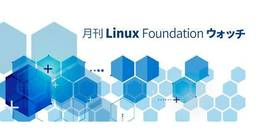
LFが欧州OSSと低品質AI生成PRを指す「AIスロップ」問題の2つのレポートを公開、OSERAは100日で本格稼働、ほか
Think IT（シンクイット）
LFが欧州OSSと低品質AI生成PRを指す「AIスロップ」問題の2つのレポートを公開、OSERAは100日で本格稼働、ほかitoh2026年10月30日月刊Linux Foundationウォッチシェア ポスト はてブ 優先するニュース提供元に追加 「主権」の次は「参加」ーLFが「2026年 欧州オープンソースの現状」レポートを公開Linux Foundation(以下、LF)は2026年10月7日、チェコ・プラハで開催された「Open Source Summit Europe」において、LF Europe、LF Research、NeoNephosとの共同によるレポート「2026 State of Open Source in Europe」(2026年 欧州オープンソースの現状)を公開しました。今年で5回目となる年次レポートで、欧州の組織におけるオープンソースの活用状況、ガバナンス、そしてデジタル主権への取り組みを分析しています。なお、同イベントはLinux誕生35周年を記念する節目の開催でもありました。【参照】2026 State of Open Source Europehttps://www.linuxfoundation.org/research/world-of-open-source-eu-20266月号では同じく欧州を対象とした「2026 State of Tech Talent Europe」を取り上げ、欧州の組織の54%がAI戦略の柱としてオープンソースを位置づけていることを紹介しました。今回のレポートは、その背景にある「デジタル主権」という動機と、それを実現するうえでの課題をより直接的に掘り下げたものです。94%がデジタル主権を重視、ガバナンスの有無でROIに差レポートによると、欧州の組織の94%がデジタル主権を自社の技術戦略にとって重要だと回答しており、そのうち61%は「非常に重要」としています。主な動機はセキュリティとプライバシーです。注目すべきは、オープンソースのガバナンス成熟度とリターンの関係です。高度なオープンソースガバナンスを持つ組織は投資に対して平均4倍超のリターンを得ている一方、正式なガバナンスを持たない組織では3.6倍に留まります。それにもかかわらず、欧州の組織の31%はいまだに正式なオープンソースガバナンスの枠組みを持って
2日前
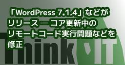
「WordPress 7.1.4」などがリリース ─ コア更新中のリモートコード実行問題などを修正
Think IT（シンクイット）
「WordPress 7.1.4」などがリリース ─ コア更新中のリモートコード実行問題などを修正 複数の保存型XSSや未公開Customizer情報の漏えいにも対応、旧系列にも修正版kawahara2026年10月30日シェア ポスト はてブ 優先するニュース提供元に追加 WordPress development teamは10月28日(現地時間)、オープンソースのコンテンツ管理システム「WordPress 7.1.4」をリリースした。 「WordPress 7.1.4」は、複数の脆弱性に対応したセキュリティリリース。コアの更新処理における競合状態によって、更新中にリモートコード実行へつながる可能性がある問題のほか、ブロックやInteractivity API、Customizerなどに存在する複数の保存型クロスサイトスクリプティング(XSS)問題が修正された。 「WordPress 7.1.4」の主な修正点は次の通り。 特に重要度が高いのは、WordPressコアの更新処理に存在した競合状態で、更新処理が行われている時間帯にリモートコード実行へつながる可能性があるという。 保存型XSSについては、ContributorやEditor以上の権限を持つ利用者が関係する問題が複数含まれる。複数の投稿者が参加するサイトや、外部ユーザへ投稿権限を付与している環境では、早急な更新が求められる。 同日には旧系列向けとして、WordPress 7.0.8、6.9.11、6.8.12なども公開され、4.7系列には4.7.39が提供された。ただし、開発チームは、積極的に保守され安全に利用できる版は最新の7.1系列のみとしている。旧系列の修正版を適用した場合も、テーマやプラグインとの互換性を確認したうえで7.1系列への移行を検討する必要がある。(川原 龍人/びぎねっと)[関連リンク]リリースアナウンス(7.1.4) この記事をシェアしてください シェアする ポストする >ブクマする noteで書く 優先するニュース提供元にThink ITを追加 前の記事GitHub Copilotの「Assisted permissions」提供開始 ─ 安全と判断した操作を自動承認 次の記事Linuxカーネルに重要な脆弱性「CVE-2026-98432」─ IPv4経由で遠隔DoSのおそれ 関連
2日前
悪用までの猶予が「1分」に迫るフロンティアAI時代に開発と本番を貫く脆弱性管理が必要
Think IT（シンクイット）
悪用までの猶予が「1分」に迫るフロンティアAI時代に開発と本番を貫く脆弱性管理が必要itoh2026年10月29日「インプレス AI Days 2026」レポートシェア ポスト はてブ 優先するニュース提供元に追加 Sponsored by: 日本アイ・ビー・エム株式会社提供：日本アイ・ビー・エム株式会社フロンティアAI(最先端AIモデル)の進化により、脆弱性の発見から悪用までの時間が急速に縮まっている。脆弱性のすべてに手を打つのが現実的でなくなる中、企業にはリスクに基づいて優先順位を付け、修正を素早く本番環境へ反映する体制が欠かせない。日本IBM ソフトウェア事業統括 オートメーション・プラットフォーム事業部 オートメーション・プラットフォーム テクニカルセールスの河野 哲也 氏が「インプレス AI Days 2026」(主催：インプレス、2026年9月15日〜16日)に登壇し、開発段階と本番環境の両面から脆弱性を管理するモデルの具体像を話した。 「脆弱性の数が増えているだけではない。即座に悪用されることが問題になっている」--。日本IBM ソフトウェア事業統括 オートメーション・プラットフォーム事業部 オートメーション・プラットフォーム テクニカルセールスの河野 哲也 氏は、フロンティアAI(最先端AIモデル)がセキュリティにもたらした変化をこう指摘する(写真1)。 写真1：日本IBM ソフトウェア事業統括 オートメーション・プラットフォーム事業部 オートメーション・プラットフォーム テクニカルセールスの河野 哲也 氏国内でも危機感は高まっている。金融庁は2026年5月、フロンティアAIによる脅威を踏まえて金融機関に短期的な対応を求めた。脆弱性の発見から攻撃までのスピードと規模が急拡大していることを指摘し、大量の脆弱性やパッチの発生を前提に、資産管理、脆弱性管理、監視体制を経営主導で早急に強化するよう求めている。背景にあるのは脆弱性の急増だ。新規に登録されるCVE(Common Vulnerabilities and Exposures：共通脆弱性識別子)は2016年の約6400件から増え続け「2026年には約5万9000件と700%以上増える見込み」(河野氏)だ。増加傾向はフロンティアAIの登場以前から続いていたものの、脆弱性の発見もまたAI技術によってさらに
3日前
Auth0のデベロッパーアドボケイト池原大然さん
Think IT（シンクイット）
Auth0のデベロッパーアドボケイト池原大然さんitoh2026年10月29日DevRelキャリア図鑑シェア ポスト はてブ 優先するニュース提供元に追加 はじめにDevRelに関わる人たちは増えている一方で「なぜDevRelに関わるようになったのか」「どういったキャリアを歩んで現在があるのか」については、あまり明らかにされていません。それぞれ異なるキャリアを歩んできていますが、その共通項を探っていこうというのが本連載の目的です。DevRelとしてのキャリアに興味がある方に、ぜひ読んでほしいです。第6回目となる今回は、Auth0のデベロッパーアドボケイトを務める池原大然さんに、これまでのキャリアとDevRelとの関わりについてお話を伺いました。偶然の登壇から始まったDevRelキャリア池原さんが開発会社のプログラマー・SEとして、エンジニアとしてのキャリアを歩み始めたのは26〜27歳になる頃でした。その後、外資系企業に転職してテクニカルサポートを担当します。DevRelにつながる最初の出来事は、当時の会社でデベロッパーエバンジェリストの担当者が退職したことでした。すでに社としてカンファレンスへの登壇が決まっていたものの、話す人がいない。そこで池原さんに声がかかりました。それまでSEとして顧客と話す経験はあったものの、不特定多数の人に技術について伝えるのは初めてでした。池原さん自身「なんで自分なんだろう」という感覚もあったそうです。人前で話すこと自体に強い抵抗があったわけではありません。一方で、技術的な内容を分かりやすく伝える経験はほとんどなく、最初の登壇ではかなり緊張したと振り返ります。「目の前にいる人たち全てがプロフェッショナルに見える、自分よりも知っている人たちが多いなっていう感覚でした」この感覚は長くDevRelを経験した現在でも残っており、自分より製品について詳しい利用者がいる可能性を常に意識していると言います。だからこそ、すべてを知っていることよりも分からないことを認めて調べ、きちんと相手に返すことを大切にしています。その後、インフラジスティックス・ジャパンでテクニカルサポートを続けながらデベロッパーエバンジェリストやプリセールスを兼任し、2009年頃に正式にデベロッパーエバンジェリストのタイトルを持つようになりました。 「北海道CLR/H カソウ化デイ」
3日前

【AIに相談して買う時代、購入まで任せたい？】調査から見えたAIコマースの課題
Think IT（シンクイット）
【AIに相談して買う時代、購入まで任せたい？】調査から見えたAIコマースの課題kaoringo2026年10月29日Gen AI Timesシェア ポスト はてブ 優先するニュース提供元に追加 本連載は、生成AIコミュニティ「IKIGAI lab.」で活動するメンバーが、それぞれの専門領域で培ってきた知見を持ち寄りながら、生成AIを取り巻く動向を技術・ビジネス・ガバナンスの観点から整理しお届けしています。NTTデータが2026年9月30日に公表した「GenAI生活者インサイトレポート2026 ISSUE 02」では、AIが買い物の意思決定に与える影響が拡大しつつあることが見えてきました。同年8月に全国の15〜69歳のAI利用経験者3,948人を対象に実施した調査では、商品・サービスの購入・利用時にAIを使った人の約7割が、AIの提案を参考に採用した経験があると回答。その割合は3月の前回調査から約8ポイント上昇しており、商品を選ぶ際にAIの提案を取り入れる動きが広がっています。ChatGPTやGeminiに買い物の相談ができること自体は、すでに知られています。では、AIが購買判断に使われる背景には何があり、その提案を購入につなげるには何が必要なのでしょうか。国内の調査結果と、2026年に発表された各社の取り組みから考えてみます。【出典】「GenAI生活者インサイトレポート2026 ISSUE 02」(NTTデータ 2026/09/30)なぜAIが買い物の判断材料になっているのか商品を選ぶ際には、価格や仕様、レビュー、用途との相性など、比較する観点がいくつもあります。候補が増えると、それぞれの違いを確かめながら、何を優先するか迷うこともあるでしょう。AIを使うことで、こうした比較や条件整理の手間を軽減できます。希望する条件に沿った候補の絞り込みや、商品の特徴・違いの整理などを任せられるためです。9月30日公表のNTTデータの詳細レポートでは、AIの提案を採用した1,662人に、その理由を複数回答で尋ねています。最も多かったのは「自分で検索・比較するより速く、手間が省けた」で47.7%でした。さらに、「自分だけではたどり着けない提案だと感じた」が33.0%、「自分の条件・好みに合わせてパーソナライズされていると感じた」が29.4%と続きます。効率性に加え、新たな候補の発見
3日前
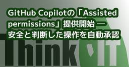
GitHub Copilotの「Assisted permissions」提供開始 ─ 安全と判断した操作を自動承認
Think IT（シンクイット）
GitHub Copilotの「Assisted permissions」提供開始 ─ 安全と判断した操作を自動承認 Copilot CLI、Copilotアプリ、Visual Studio Codeに対応、企業管理者向け制御も用意 kawahara2026年10月28日シェア ポスト はてブ 優先するニュース提供元に追加 GitHubは10月26日(現地時間)、GitHub Copilotの権限承認機能「Assisted permissions」を提供開始した。 「GitHub Copilot」は、コードの生成や補完、質問への回答、ファイル編集、コマンド実行などを支援するAI開発ツール。Assisted permissionsは、Copilotがコマンドの実行やファイルへのアクセス、URLの参照などを要求した際に、大規模言語モデルを利用して操作の安全性を評価する機能となる。 従来の手動承認では、許可されていない操作を実行するたびに利用者の確認が必要だったが、すべての操作を無条件で承認する「Allow All」では、個々の操作に対する監督が行われない。Assisted permissionsは両者の中間に位置し、安全であると明確に判断された操作だけを自動承認する。 Copilot CLIでは「/permissions」を実行して「assisted」を選択するか、「/permissions assisted」と入力して有効化できる。GitHub Copilotアプリではモード選択画面の「Tool permissions」、Visual Studio Codeでは権限選択画面から設定する。 Copilot CLIの非対話実行では「--assisted-approval」オプションを利用できる。モデルが安全と判断した要求は自動承認されるが、利用者の確認が必要な要求は拒否され、その理由がCopilotへ返される。Copilotは説明を基に別の方法を試すことができ、CI/CDや定期処理など、利用者が承認操作を行えない環境での活用が想定される。(川原 龍人/びぎねっと)[関連リンク]一般提供開始の告知ドキュメントGitHub Copilot この記事をシェアしてください シェアする ポストする >ブクマする noteで書く 優先するニュース提供元にThink ITを追加 前の記
3日前
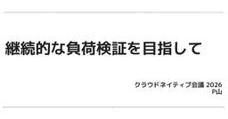
【クラウドネイティブ会議】負荷検証を「やった」で終わらせない、実際のアクセスログとAIでシナリオを継続的に育てる仕組み
Think IT（シンクイット）
【クラウドネイティブ会議】負荷検証を「やった」で終わらせない、実際のアクセスログとAIでシナリオを継続的に育てる仕組みiioka2026年10月28日「クラウドネイティブ会議」レポートシェア ポスト はてブ 優先するニュース提供元に追加 タクシー配車サービスを安定して運用するには、需要のピークを想定した負荷検証が欠かせない。しかし十分なトラフィックを流していても、実際の利用パターンをシナリオが網羅していなければ、障害を防げないことがある。「クラウドネイティブ会議」のセッション「継続的な負荷検証を目指して」では、GO株式会社の山下和彦氏が、サービス障害から得た教訓をもとに、Grafana Loki、Claude Code、k1LoW/runnを組み合わせ、本番環境のアクセスログから負荷検証シナリオを継続的に作成・検証する仕組みを紹介した。本稿では、人の作業サイクルをAIに移しながら、最終判断を人が担う取り組みをレポートする。負荷の大きさではなくシナリオの網羅性が問題だったGO株式会社の山下和彦氏は「継続的な負荷検証を目指して」と題し、タクシー配車サービスで発生した障害と、その経験を踏まえて構築した負荷検証の仕組みを紹介した。山下氏は同社のバックエンド開発部に所属し、以前はホスティング事業やプラットフォームエンジニアリングに携わっていた。発端となったのは、タクシー需要のピーク時に発生したサービス障害である。退勤時間帯の大雨や飲み会の時間帯、年末の忘年会シーズン、終電後などは、タクシーへの需要が集中しやすい。障害発生時にはDBコネクションがスタックして接続できなくなり、それが連鎖してメインAPIが応答不能になった。DBへの対応後、トラフィック・シェーピングによって復旧したという。原因は大きく2つあった。1つは、本来レプリカDBに流すべきSELECTクエリがプライマリDBに多数送られていたこと。そしてもう1つは、トランザクション内で外部APIを呼び出していたことである。そのため、外部APIの応答を待つ間もトランザクションが維持され、実行時間が長期化していた。その結果、Wait系のメトリクスが上昇し、DBの処理能力が限界に達したというわけだ。 障害に備え、クエリチューニングとDBリファクタリング、パフォーマンスの悪いコードの書き換え、負荷検証も進めていた。負荷検証にはGoでス
4日前
「Visual Basic.NET」の「WPF」でデスクトップゲーム「Color」を開発してみよう
Think IT（シンクイット）
「Visual Basic.NET」の「WPF」でデスクトップゲーム「Color」を開発してみようitoh2026年10月28日ゲーム実装で身に付くプログラミングシェア ポスト はてブ 優先するニュース提供元に追加 はじめにこの連載では、さまざまなプログラミング言語やライブラリで同じゲームを開発することで、容易にそのプログラミング言語に入門します。第12回の今回はプログラミング言語「Visual Basic.NET」(VB.NET)を使って、次のURLのようなColorゲームを作ります。こちらからアセットをダウンロードしておいてください。ColorゲームについてColorゲームの内容は第1回でも解説した通り、ゲームを開始したら、赤緑青の色ブロックをクリックします。すると背景色にその色が混ぜられるので、どんどんクリックして真っ白な背景にしていこうというゲームです。プログラミング言語についてVisual Basic.NETはMicrosoftが提供するVisual Basic(VB)を.NET環境で動作するように発展させた言語です。VB.NETでできることは、Windows向けのデスクトップアプリ開発、Webアプリケーション開発、データベースを使った業務システム、ファイル操作やExcelなどとの連携、.NETのライブラリを利用した各種プログラムなどです。WPFについて「WPF」は「Windows Presentation Foundation」の略で、Microsoftが提供するWindows向けデスクトップアプリのUIフレームワークです。簡単に言うと、VB.NETやC#でWindowsアプリの「画面」を作るための仕組みです。例えば、ボタンや入力フォームがある業務アプリ、顧客管理システム、在庫管理システム、グラフや表を表示するアプリなど、複数画面を持つWindowsアプリが作れます。WPFでは「VB.NET / C# → プログラムの処理」と「XAML → 画面のレイアウトや見た目」という役割分担をします。開発のために必要となる環境の準備今回必要となる、無料版の「Visual Studio 2026」(以下、VS2026)を準備します。次のURLからVisual StudioインストーラーをダウンロードしてVS2026のVB.NETををインストールしてください。プロジェ
4日前
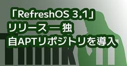
「RefreshOS 3.1」リリース ─ 独自APTリポジトリを導入
Think IT（シンクイット）
「RefreshOS 3.1」リリース ─ 独自APTリポジトリを導入 Debian 13.7までの更新を反映、Steamなどに必要な32ビットソフトウェアにも対応 kawahara2026年10月28日シェア ポスト はてブ 優先するニュース提供元に追加 eXybit Technologiesは10月27日(現地時間)、DebianベースのLinuxディストリビューション「RefreshOS 3.1」をリリースした。 「RefreshOS」は、Debian StableをベースにKDE Plasmaデスクトップを組み合わせたLinuxディストリビューション。ドライバやコーデック、ファームウェア、主要なデスクトップアプリケーションを設定済みの状態で提供し、導入後すぐに利用できる環境を提供する。 「RefreshOS 3.1」では、Debian 13.7までのパッケージ更新を反映するとともに、RefreshOS独自のAPTリポジトリを導入した。32bit版ソフトウェアとの互換性や、英語以外の環境におけるメニュー項目も改善されている。ハイライトは次の通り。 今回の中心となる変更は、公式APTリポジトリ「repo.refreshos.org/v3」の導入。RefreshOS固有のパッケージやブランド設定、システム構成を、通常のパッケージ管理機能を通じて配信する基盤が整備された。APTの優先順位設定も追加され、適切に公式リポジトリのパッケージが選択されるようになっている。 「RefreshOS」は、Webサイトから入手できる。(川原 龍人/びぎねっと)[関連リンク]ニュースリリース この記事をシェアしてください シェアする ポストする >ブクマする noteで書く 優先するニュース提供元にThink ITを追加 前の記事「KDE Plasma 6.8.2」リリース ─ マルチディスプレイやRDPの問題を修正 次の記事GitHub Copilotの「Assisted permissions」提供開始 ─ 安全と判断した操作を自動承認 関連記事この記事の筆者 kawahara kawaharaのプロフィールを見る 筆者の人気記事 「Apache HTTP Server 2.4.69」リリース ─ 20件の脆弱性を修正10月3日 23:23 「Python 3.15.2/3.14
4日前
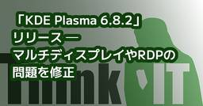
「KDE Plasma 6.8.2」リリース ─ マルチディスプレイやRDPの問題を修正
Think IT（シンクイット）
「KDE Plasma 6.8.2」リリース ─ マルチディスプレイやRDPの問題を修正 デスクトップアイコン、タスクマネージャー、壁紙、入力メソッドなどの回帰に対応kawahara2026年10月28日シェア ポスト はてブ 優先するニュース提供元に追加 KDE.orgは10月27日(現地時間)、デスクトップ環境「KDE Plasma 6.8.2」をリリースした。 「KDE Plasma」は、LinuxやBSDなどのUnix系OSで利用されるオープンソースのデスクトップ環境。ウィンドウ管理やパネル、システム設定、アプリケーションランチャーなどを提供し、高いカスタマイズ性を特徴とする。 「KDE Plasma 6.8.2」のハイライトは次の通り。 KDE Plasmaは、Webサイトから入手できる。(川原 龍人/びぎねっと)[関連リンク]リリースアナウンス この記事をシェアしてください シェアする ポストする >ブクマする noteで書く 優先するニュース提供元にThink ITを追加 前の記事「Kali Linux 2026.3」リリース ─ イメージ構築スクリプトを刷新 次の記事「RefreshOS 3.1」リリース ─ 独自APTリポジトリを導入 関連記事この記事の筆者 kawahara kawaharaのプロフィールを見る 筆者の人気記事 「Apache HTTP Server 2.4.69」リリース ─ 20件の脆弱性を修正10月3日 23:23 「Python 3.15.2/3.14.10/3.13.18/3.12.16/3.11.18」リリース ─ 侵害されたeMudhraのCA鍵をブロック10月26日 16:52 「PHP 8.5.12」など4系列を緊急リリース ─ CriticalのRCE脆弱性2件を修正10月22日 10:29 「Ubuntu 26.10」リリース ─ Rust製coreutilsへ全面移行10月15日 23:25 「Python 3.14.8」リリース ─ 緊急のアップデートリリース10月1日 23:32 「Raspberry Pi OS」2026年10月6日版リリース ─ デスクトップ環境を改善10月8日 1:51 業界情報やナレッジが詰まったメルマガやソーシャルぜひご覧くださいメルマガ Facebook X(エックス) Bl
4日前
自律型ペネトレーションテストの結果は信頼できるのか? OWASP APTSが求める記録と検証
Think IT（シンクイット）
自律型ペネトレーションテストの結果は信頼できるのか? OWASP APTSが求める記録と検証itoh2026年10月27日AIにまつわるセキュリティあれこれシェア ポスト はてブ 優先するニュース提供元に追加 今回扱う範囲前回まで、OWASPの「Autonomous Penetration Testing Standard (APTS)」の8つのドメインのうち、実行時の安全性に関わる4つを見てきました (APTS v0.1.0を対象)。スコープ強制(Scope Enforcement)、安全制御(Safety Controls)、人間による監督(Human Oversight)、段階的な自律性(Graduated Autonomy)です。 これらは、ペネトレーションテスト(以下、ペンテスト)中に対象システムへ与える影響を抑えるための要件でした。今回は、残りの4つのドメインを扱います。 監査可能性(Auditability)、操作耐性(Manipulation Resistance)、サプライチェーン信頼性(Supply Chain Trust)、報告(Reporting)です。前半の4つのドメインが「検証対象を守る」ための要件だったのに対し、今回扱う後半のドメインは視点が変わります。ペンテストの終了後に何が起きたかを検証できるか、ペンテスト基盤自体が攻撃された際に耐えられるか、外部のAIプロバイダに依存して大丈夫か、そして出力された検証結果を信頼してよいか、という課題を扱います。APTS紹介の最終回として、これら4つを順に見ていきます。すべての操作を後から再現できる状態にする監査可能性のドメインには、20件の要件が含まれています。このドメインの目的は、ペンテスト基盤が行ったすべての操作を事後に検証し、再現し、異議を申し立てられる状態にすることです。APTSによれば、自律型プラットフォームが人間の監督を減らして運用する権利を得られるのは、その判断、証拠、状態が、顧客によるレビュー、インシデント調査、規制当局の照会、紛争解決を支えるのに十分な忠実度で、事後に復元できる場合に限られます。 前回見た段階的な自律性は、この監査可能性が土台にあって初めて成り立ちます。記録の中心になるのが、構造化されたイベントログです。 APTS-AR-001は、すべてのネットワークリクエストと
5日前

17件の障害をすべて解決、平均2分21秒――Cognitionの「Devin Oncall」が本番インシデントの一次対応を担う
Think IT（シンクイット）
17件の障害をすべて解決、平均2分21秒――Cognitionの「Devin Oncall」が本番インシデントの一次対応を担うitoh2026年10月27日編集部が読み解く! 3行でわかるテックニュースシェア ポスト はてブ 優先するニュース提供元に追加 📌 このニュース、3行で押さえるなら 📌Cognitionが、本番環境で発生するアラートやバグ報告をAIソフトウェアエンジニア「Devin」が自動で調査し、開発チームによる本番インシデントの原因究明と解決を支援する「Devin Oncall」の一般提供を開始した。すでに世界有数の大企業で導入され、日々数千件に上る本番環境のアラートを処理している実際の本番障害をもとにしたSREベンチマーク「SREGym」で最高スコアを記録し、SREGym-Lite(17の障害)でエンドツーエンド成功率100%を達成した。本ベンチマークは、稼働中のシステムにおける障害の根本原因を特定し、同一の実行過程で問題を緩和することを求めるものメインのエージェントと並行して非同期に動作する「レビュー」エージェントが、相関関係と因果関係の混同、矛盾するテレメトリの見落とし、きっかけと根本原因の取り違えなどを点検し、早計な結論の導出を防ぐ📝 Think IT編集部の見解 📝リリースが冒頭で認めている課題が、この製品の位置づけを示している。従来のAIエージェントによる本番デバッグは、コード生成能力と比べて精度が足りなかった。根本原因を特定する前に結論を出す、調査範囲が限定的、ロールバックやスケールアップで済む場面で大規模なコード変更を試みる——オンコール対応をAIに任せようとして諦めた経験がある読者には、心当たりのある挙動だろう。その対策として置かれているのがレビューエージェントだ。メインのエージェントと並行して非同期に動作し、直近の推論とツール呼び出しとその結果を点検する。見ているのは「相関関係と因果関係の混同」「矛盾するテレメトリの見落とし」「きっかけと根本原因の取り違え」。いずれも人間の障害対応でも起きる典型的な誤りで、それを別のエージェントに監視させるという構成になっている。本誌が8月に取り上げたGitLab 19.3やNutanixのMCPサーバーが権限で縛る方向だったのに対し、こちらは推論の質を別の目で担保する設計だ。3層のコンテキ...
5日前
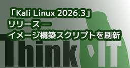
「Kali Linux 2026.3」リリース ─ イメージ構築スクリプトを刷新
Think IT（シンクイット）
「Kali Linux 2026.3」リリース ─ イメージ構築スクリプトを刷新 KDE Plasma 6.7とLinux 7.1.5を採用、6種類のセキュリティツールを追加kawahara2026年10月26日シェア ポスト はてブ 優先するニュース提供元に追加 kali.orgは10月26日(現地時間)、ペネトレーションテスト向けLinuxディストリビューション「Kali Linux 2026.3」をリリースした。 「Kali Linux」は、侵入テスト、デジタルフォレンジック、脆弱性調査などに用いるツール群を収録したDebianベースのLinuxディストリビューション。「Kali Linux 2026.3」では、公式イメージの生成に使用するビルドスクリプトを刷新したほか、KDE Plasma 6.7、Linux 7.1.5、126件のパッケージ更新、6種類の新しいセキュリティツールを収録した。 「Kali Linux 2026.3」のハイライトは次の通り。 「Kali Linux 2026.3」は、Webサイトからダウンロードできる。(川原 龍人/びぎねっと)[関連リンク]Kali Linux 2026.3リリースアナウンス この記事をシェアしてください シェアする ポストする >ブクマする noteで書く 優先するニュース提供元にThink ITを追加 前の記事「Python 3.15.2/3.14.10/3.13.18/3.12.16/3.11.18」リリース ─ 侵害されたeMudhraのCA鍵をブロック 次の記事「KDE Plasma 6.8.2」リリース ─ マルチディスプレイやRDPの問題を修正 関連記事この記事の筆者 kawahara kawaharaのプロフィールを見る 筆者の人気記事 「Apache HTTP Server 2.4.69」リリース ─ 20件の脆弱性を修正10月3日 23:23 「Python 3.15.2/3.14.10/3.13.18/3.12.16/3.11.18」リリース ─ 侵害されたeMudhraのCA鍵をブロック10月26日 16:52 「PHP 8.5.12」など4系列を緊急リリース ─ CriticalのRCE脆弱性2件を修正10月22日 10:29 「Ubuntu 26.10」リリース ─ Rust製cor
5日前
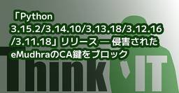
「Python 3.15.2/3.14.10/3.13.18/3.12.16/3.11.18」リリース ─ 侵害されたeMudhraのCA鍵をブロック
 1
1
Think IT（シンクイット）
「Python 3.15.2/3.14.10/3.13.18/3.12.16/3.11.18」リリース ─ 侵害されたeMudhraのCA鍵をブロック 「tarfile」の脆弱性にも対応、アップデートを kawahara2026年10月26日シェア ポスト はてブ 優先するニュース提供元に追加 Python Software Foundationは10月25日(現地時間)、プログラミング言語「Python 3.15.2/3.14.10/3.13.18/3.12.16/3.11.18」をリリースした。 「Python」は、簡潔な構文と豊富なライブラリを特徴とするオープンソースのプログラミング言語。Webアプリケーション、データ分析、機械学習、科学技術計算、システム管理など幅広い分野で利用されている。 「Python 3.15.2」は、Python 3.15系列の最新メンテナンスリリース。侵害されたeMudhra／emSignの中間認証局(CA)鍵へ緊急対応するセキュリティアップデート、tarfileで展開先を置き換えるリンクをブロックするようになるなど、Python 3.15.1から約130件の修正、ビルド改善、文書更新も取り込まれた。 今回、秘密鍵が侵害されたeMudhraの中間CA証明書を、Pythonの「ssl」モジュールが明示的に拒否するよう変更された(CVE-2026-115557への対応)。OSやCA証明書バンドルの更新が遅れている場合に備えた多層防御で、更新後のPythonでは、古いpipを使っている場合でも通常のpip更新を安全に開始できる。「tarfile.tar_filter」でアーカイブを展開する際、リンクによって展開先そのものを置き換えられる問題(CVE-2026-114583)も修正された。 また、「Python 3.14.10」にも、Python 3.15.2と共通するセキュリティ修正と約120件の不具合修正などが含まれる。Python 3.15.2と3.14.10にはバイナリインストーラーが用意される一方、セキュリティ修正のみの段階にあるPython 3.13.18、3.12.16、3.11.18はソースのみの提供となる。(川原 龍人/びぎねっと)[関連リンク]リリースアナウンス(Python 3.15.2) この記事をシェアしてください
5日前
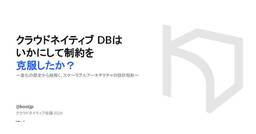
【クラウドネイティブ会議】クラウドネイティブDBが乗り越えてきた3つの壁から学ぶ分散システム設計の指針
Think IT（シンクイット）
【クラウドネイティブ会議】クラウドネイティブDBが乗り越えてきた3つの壁から学ぶ分散システム設計の指針iioka2026年10月26日「クラウドネイティブ会議」レポートシェア ポスト はてブ 優先するニュース提供元に追加 株式会社hacomonoのプリンシパルエンジニア（分散システム）の上田義明氏が「クラウドネイティブ会議 2026」に登壇し、「クラウドネイティブDBはいかにして制約を克服したか？ ～進化の歴史から紐解く、スケーラブルアーキテクチャの設計指針～」と題したセッションを実施した。セッションの内容は、データベースが書き込み性能、I/O、強い一貫性という3つの壁をどのように乗り越えてきたのかを解説したものだ。ここでは、クラウドネイティブDBの進化をたどりながら、そこから導かれる分散システム設計の指針を紹介する。クラウドネイティブDBを形づくる3つの壁と共通原則セッションの冒頭では「クラウドネイティブDBとは何か」が整理された。上田氏はCNCFの「Cloud Native Definition v1.1」から、動的にスケールできる能力、回復性・管理力・可観測性を備えた疎結合システム、インパクトのある変更を最小限の労力で行えること、という3点を取り上げた。 これをデータベースに当てはめると、動的スケーリング、Compute／Storage分離、マネージド運用や自己修復、分散環境における整合性という4つの実装パターンに分解できる。続いて上田氏は、聴講者を「急成長するSaaSのSRE／DBA」とするストーリーを設定した。単一プライマリのDBで運用するサービスが成長し、書き込みスループットが頭打ちになる。これ以上大きなインスタンスはなく、海外展開も視野に入れながら、現在と同等の整合性とレイテンシーを維持しなければならないという状況である。「海外展開も視野に、整合性は今のまま、レイテンシーも今くらいでと言われたとき、何を考えればよいのかをテーマとして持ってください」と上田氏は語った。そこで現れるのが、「書き込みボトルネック」「I/O負荷とスケーリング」「分散下における強い一貫性」という3つの壁である。それぞれを解決するには、運用負荷、ネットワーク帯域、レイテンシーという代償も考えなければならない。「制約はなくなりません。暗黙の前提を捨て、APIや構造として可視化し、責任
6日前
OpenXRの新拡張機能公開、Meta最新決算発表 ほか
Think IT（シンクイット）
OpenXRの新拡張機能公開、Meta最新決算発表 ほかiioka2026年10月26日週刊VRウォッチシェア ポスト はてブ 優先するニュース提供元に追加 今週も、バーチャル領域の最新動向をお届けします。Khronos GroupからはXRアプリのマルチウィンドウ表示を実現するOpenXRの新拡張機能「空間コンテナ」が公開されました。Metaの2026年第3四半期決算では、AIスマートグラスの堅調な伸びと今後の黒字化に向けた投資戦略が明かされています。また、眼鏡市場がAR技術を取り入れた「Linse Display」のクラウドファンディングを開始したほか、SnapのARグラス「SPECS」に俳優のロバート・ダウニー・Jr.が役員として参画するなど、日常や産業で活躍するスマートグラスの話題が目立ちました。OpenXR、新拡張機能「空間コンテナ」が公開KhronosのOpenXRワーキンググループは、XRアプリをPCのウィンドウのように扱える新拡張機能「空間コンテナ」を公開しました。従来の画面全体を使う没入型体験に加え、システム上の共通規格空間内で複数アプリを並べて表示・操作できる仕組みを整備し、現実の作業や他アプリとの並行利用を可能にします。アプリは並列表示のバウンデッドモードと全画面のイマーシブモードを切り替えられ、位置管理はシステム側が担います。作成・管理を行う「XR_EXT_spatial_container」を含む2つの拡張機能が提供され、GoogleのAndroid XRやGodot、Meta、Unityなど主要なプラットフォームや開発環境がこの標準化への支持を表明しています。本ニュースの詳細はこちら：OpenXR、新拡張機能「空間コンテナ」が公開https://www.moguravr.com/openxr-spatial-containers/Meta、2026年第3四半期の決算を発表。Reality Labs部門の売上は4億4300万ドルMetaが発表した2026年第3四半期の決算によると、Reality Labs部門の売上高は前年同期比6％減の4億4300万ドル、営業損失は41億2900万ドルとなりました。Meta Questの販売減少が響いたものの、伸びを続けるAIスマートグラスがその一部を補っています。通期損益は前年より改善し180億～190億
6日前
「nginx 1.31.8」リリース ─ HTTP/3利用時の異常終了を修正
Think IT（シンクイット）
「nginx 1.31.8」リリース ─ HTTP/3利用時の異常終了を修正 working_directoryの相対パス基準を変更、kTLSやSolarisビルドの問題にも対応kawahara2026年10月25日シェア ポスト はてブ 優先するニュース提供元に追加 nginx開発チームは10月21日(現地時間)、オープンソースのWebサーバ／リバースプロキシ「nginx 1.31.8」をリリースした。 「nginx」は、Webサーバ、リバースプロキシ、コンテンツキャッシュ、ロードバランサとして利用できるオープンソースソフトウェア。TCP／UDPやメールのプロキシ機能も備え、高い同時接続処理性能を特徴とする。 「nginx 1.31.8」は、mainline系列「1.31系列」の最新版。HTTP/3使用時にワーカープロセスがSIGBUSで異常終了する問題や、「working_directory」ディレクティブの処理、kernel TLS利用時のログ出力、Solarisでのビルドなどが修正された。 「nginx 1.31.8」のハイライトは次の通り。 内部JSONパーサーのAPIも変更されたため、nginxの内部APIへ直接依存するサードパーティーモジュールでは互換性の確認が必要となる。 nginx 1.31.8は、Webサイトから入手できる。(川原 龍人/びぎねっと)[関連リンク]nginx Changesnginxセキュリティアドバイザリ この記事をシェアしてください シェアする ポストする >ブクマする noteで書く 優先するニュース提供元にThink ITを追加 前の記事「BIND 9.20.30/9.21.27」リリース ─ 深刻度「High」の脆弱性4件を修正 次の記事「Python 3.15.2/3.14.10/3.13.18/3.12.16/3.11.18」リリース ─ 侵害されたeMudhraのCA鍵をブロック 関連記事この記事の筆者 kawahara kawaharaのプロフィールを見る 筆者の人気記事 「Apache HTTP Server 2.4.69」リリース ─ 20件の脆弱性を修正10月3日 23:23 「Python 3.15.2/3.14.10/3.13.18/3.12.16/3.11.18」リリース ─ 侵害されたeMudhra
6日前
「BIND 9.20.30/9.21.27」リリース ─ 深刻度「High」の脆弱性4件を修正
Think IT（シンクイット）
「BIND 9.20.30/9.21.27」リリース ─ 深刻度「High」の脆弱性4件を修正 潜在的なリモートコード実行やCPU・メモリー枯渇、namedの異常終了に対応kawahara2026年10月24日シェア ポスト はてブ 優先するニュース提供元に追加 ISCは10月21日(現地時間)、DNSサーバソフトウェア「BIND 9.20.30」をリリースした。開発系列の「BIND 9.21.27」と、サポート契約者向けの「BIND 9.20.30-S1」も同時に公開されている。 BINDは、ドメイン名とIPアドレスを対応付けるDNSの権威サーバーやキャッシュDNSサーバーとして利用されるオープンソースソフトウェア。BIND 9.20系列は、本番環境向けの安定版で長期サポートを受けられるExtended Support Version(ESV)に位置付けられている。 「BIND 9.20.30」のハイライトは次の通り。 CVE-2026-94300では、GSS-TSIGで署名されたUDPメッセージを再送することで、named内部のKerberos関連状態が破損する。攻撃者が有効な署名付きメッセージを取得し、制御下のゾーンを利用して細工した問い合わせを送信できる場合、namedの異常終了に加えてリモートコード実行につながる可能性がある。CVSS基本値は8.1となる。 CVE-2026-19630は、圧縮された名前を多数含むDNSメッセージを処理させ、少量の通信でnamedのワーカースレッドやCPU、メモリーを消費させる問題。CVSS基本値は7.5で、修正版では1件のメッセージについて実行できる名前展開処理に上限を設けた。 残る2件もCVSS基本値は7.5。4件とも回避策はなく、管理者にはアップデートが強く推奨される。 「BIND 9.20.30/9.21.27」は、Webサイトから入手できる。(川原 龍人/びぎねっと)[関連リンク]BIND 9.20.30／9.21.27リリースアナウンスリリースノート(9.20.30) この記事をシェアしてください シェアする ポストする >ブクマする noteで書く 優先するニュース提供元にThink ITを追加 前の記事「Samba 4.25.1」リリース ─ Ceph RGWモジュールのアクセス制御回避を修正 次の記事「ng
8日前
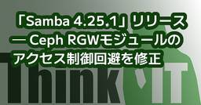
「Samba 4.25.1」リリース ─ Ceph RGWモジュールのアクセス制御回避を修正
Think IT（シンクイット）
「Samba 4.25.1」リリース ─ Ceph RGWモジュールのアクセス制御回避を修正 CTDBや大文字・小文字を扱うファイル操作、macOS／i686ビルドなど13件に対応kawahara2026年10月24日シェア ポスト はてブ 優先するニュース提供元に追加 Samba Teamは10月23日(現地時間)、オープンソースのファイル／プリント共有ソフトウェア「Samba 4.25.1」をリリースした。 「Samba 4.25.1」は、Samba 4.25系列の最新安定版となるポイントリリース。ハイライトは次の通り。 CVE-2026-109411は、vfs_ceph_rgwで大文字・小文字を区別しないファイルオープンを処理する際、アクセス制御を回避できる問題。脆弱性の影響を受けるのはSamba 4.25.0でvfs_ceph_rgwを利用している場合。該当環境では4.25.1への早期更新が推奨される。 「Samba 4.25.1」は、Webサイトから入手できる。(川原 龍人/びぎねっと)[関連リンク]リリースノート この記事をシェアしてください シェアする ポストする >ブクマする noteで書く 優先するニュース提供元にThink ITを追加 前の記事「OpenSSL 4.1.0」リリース ─ DTLS 1.3とGREASEに対応 次の記事「BIND 9.20.30/9.21.27」リリース ─ 深刻度「High」の脆弱性4件を修正 関連記事この記事の筆者 kawahara kawaharaのプロフィールを見る 筆者の人気記事 「Apache HTTP Server 2.4.69」リリース ─ 20件の脆弱性を修正10月3日 23:23 「Python 3.15.2/3.14.10/3.13.18/3.12.16/3.11.18」リリース ─ 侵害されたeMudhraのCA鍵をブロック10月26日 16:52 「PHP 8.5.12」など4系列を緊急リリース ─ CriticalのRCE脆弱性2件を修正10月22日 10:29 「Ubuntu 26.10」リリース ─ Rust製coreutilsへ全面移行10月15日 23:25 「Python 3.14.8」リリース ─ 緊急のアップデートリリース10月1日 23:32 「Raspberry Pi O
8日前
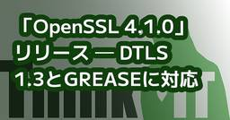
「OpenSSL 4.1.0」リリース ─ DTLS 1.3とGREASEに対応
Think IT（シンクイット）
「OpenSSL 4.1.0」リリース ─ DTLS 1.3とGREASEに対応 ML-KEM／ML-DSAやAES-CBCを高速化、IKEv2向けKDFも追加kawahara2026年10月24日シェア ポスト はてブ 優先するニュース提供元に追加 OpenSSL Projectは10月23日(現地時間)、暗号化通信ライブラリ「OpenSSL 4.1.0」をリリースした。 「OpenSSL 4.1.0」は、新機能を追加したフィーチャーリリースに相当する。UDPなどのデータグラム通信向けにDTLS 1.3を実装したほか、TLSの拡張性を維持するGREASE、IKEv2用の鍵導出関数、DTLS対応のSSLリスナーAPIなどを追加した。 「OpenSSL 4.1.0」のハイライトは次の通り。 DTLSは、UDPのように到達や順序が保証されない通信上で、TLSと同様の暗号化と認証を提供するプロトコル。リアルタイム通信、IoT、VPNなど、TCPを利用しにくい用途で使われる。OpenSSL 4.1.0ではDTLS 1.3に加え、サーバが複数のDTLS接続を待ち受けるためのSSLリスナーAPIも拡張された。 「OpenSSL 4.1.0」は、Webサイトから入手できる。(川原 龍人/びぎねっと)[関連リンク]リリースノート この記事をシェアしてください シェアする ポストする >ブクマする noteで書く 優先するニュース提供元にThink ITを追加 前の記事「PHP 8.5.12」など4系列を緊急リリース ─ CriticalのRCE脆弱性2件を修正 次の記事「Samba 4.25.1」リリース ─ Ceph RGWモジュールのアクセス制御回避を修正 関連記事この記事の筆者 kawahara kawaharaのプロフィールを見る 筆者の人気記事 「Apache HTTP Server 2.4.69」リリース ─ 20件の脆弱性を修正10月3日 23:23 「Python 3.15.2/3.14.10/3.13.18/3.12.16/3.11.18」リリース ─ 侵害されたeMudhraのCA鍵をブロック10月26日 16:52 「PHP 8.5.12」など4系列を緊急リリース ─ CriticalのRCE脆弱性2件を修正10月22日 10:29 「Ubuntu 26.10
8日前

そのログ・メトリクス、その先を見据えていますか？
Think IT（シンクイット）
そのログ・メトリクス、その先を見据えていますか？itoh2026年10月23日SREが語るインシデント対応の実践シェア ポスト はてブ 優先するニュース提供元に追加 はじめにこんにちは、Rinchokuです。第1回の「SRE Kaigi 2025」からコアスタッフを務めています。今回はその縁で寄稿の機会をいただきました。ここ数年で、オブザーバビリティ環境やインシデント対応の流れが大きく変化しました。AIエージェントがログやメトリクスを読み、日々のモニタリングを代行したり、サービスの異常の原因を調査したりします。テレメトリの収集もOpenTelemetryや各社SaaSのエージェントを導入するだけで、広い範囲をカバーできるようになりました。サービス・プロダクトに向き合うエンジニアとして、定常業務や属人化しやすい作業などが便利になったことはとてもありがたいことです。一方で「自分たちのプロダクトが何を集めているのか」「このメトリクスは何を意味しているのか」といったことを分からずに使っているという状況も増えた気がします。前回の髙石さんの回では、AIエージェントが一次調査を担うようになったことで、インシデント対応の経験や判断力をどう獲得するかが記述されていました。第3回となる本記事では、判断材料となる計測データで気に掛けることをテーマにしたいと思います。監視対応は驚くほど楽になったまず、個人的にここ数年で便利・楽になったことはログ・メトリクスの「収集」と「調査」だと思います。収集に関しては、OpenTelemetryの登場が大きく寄与しています。OpenTelemetryはトレース、メトリクス、ログを扱うベンダー中立の仕様とツール群です。Java、Python、Go、JavaScriptなど主要な言語向けのAPIやSDKがプロジェクト公式で提供されています*1。言語ごとの計装(instrumentation)や各ベンダーのエージェントを入れれば、HTTPリクエストの処理時間やエラー、データベースへの問い合わせなどを、アプリケーションのコードをほとんど書き換えずに取得できるようになりました。調査に関しては、Model Context Protocol（MCP）*3によるAIツールとの連携が大きいです。MCPの登場で、外部ツールやデータをAIにつなぐ仕組みが急速に広がりました。オ
9日前
【KubeCon Japan】KubeCon Japan 2026開催。オープンなAIを推奨する初日のキーノートを紹介
Think IT（シンクイット）
【KubeCon Japan】KubeCon Japan 2026開催。オープンなAIを推奨する初日のキーノートを紹介iioka2026年10月23日KubeCon＋CloudNativeCon Japan 2026レポートシェア ポスト はてブ 優先するニュース提供元に追加 KubeCon＋CloudNativeCon Japan 20026がパシフィコ横浜で開催。2026年7月29日と30日の2日間の会期の最初に行われた初日のキーノートセッションを紹介する。登壇したのは最近のKubeConではお馴染みのコンビ、CNCF（Cloud Native Computing Foundation）のエグゼクティブディレクターJonathan Bryce氏、そして同じくCTOのChris Aniszczyk氏だ。 テーマはBryce氏が着ているカンファレンスの公式Tシャツに書かれているようにMoving、つまり常に前進していることを解説する内容だ。クラウドネイティブなシステムが前進していることのひとつの証として、2026年3月にアムステルダムで開催されたKubeCon Europe 2026が13000人以上の参加者を集めた最大のカンファレンスになったことを挙げて紹介。これは単に参加者が増えただけではなく、CNCF配下のプロジェクトの増加、そしてCNCFに加入するメンバーが増えたということだ。 ここでの注目はHAMiとllm-dだろう。HAMiはGPUを仮想化して分割、共有するためのフレームワーク、llm-dは複数のノードで大規模言語モデルのPrefillとDecodeを最適配置するためのソフトウェアだ。どちらも推論、学習を大規模に実行するためには必須のソフトウェアスタックとなる。 NVIDIAのCNCFへの加入はKubeCon Europe 2026で発表されたが、それを再度、ここで強調した形になった。プラチナムメンバーというトップレベルのグレード、さらに約400万ドル相当のGPUリソースをCNCFに提供するという破格の貢献になっている。 さらにヨーロッパ発の金融サービスのAdyenやVMwareを買収したBroadcomなどが紹介されている。細かな話ではLinuxの認定試験を提供するLPI-Japanやカラムナー（列指向）データ分析のClickHouseなどの名前も確認
9日前
「PHP 8.5.12」など4系列を緊急リリース ─ CriticalのRCE脆弱性2件を修正
Think IT（シンクイット）
「PHP 8.5.12」など4系列を緊急リリース ─ CriticalのRCE脆弱性2件を修正 認証なしでコードを実行される可能性、PHP公式は全利用者に即時更新を要請kawahara2026年10月22日シェア ポスト はてブ 優先するニュース提供元に追加 The PHP development teamは10月21日(現地時間)、「PHP 8.5.12」「PHP 8.4.27」「PHP 8.3.36」「PHP 8.2.35」をリリースした。いずれも、認証なしのリモートコード実行につながる緊急性の高い脆弱性2件を修正したセキュリティリリースとなる。 「PHP」は、Webアプリケーションや動的なWebサイトの開発で広く利用されているオープンソースのプログラミング言語。PHP-FPM、Apacheのmod_php、php-cgiのほか、FrankenPHPやLiteSpeedなどを通じてWebサーバ上で実行される。 今回修正されたのは、メモー不足時の処理に起因するCVE-2026-109618と、解放済みメモリーを参照するCVE-2026-109619。いずれもCVSS v4.0の基本値は9.2で、深刻度は「Critical」と評価されている。 「CVE-2026-109618」は、メモリ不足が発生した際、PHPが処理中のリクエストを中断する仕組みに関する脆弱性。内部のリクエストデータが完全に初期化される前にメモリ割り当てが失敗すると、終了処理が不正なデータを有効なものとして扱い、メモリ破損からコード実行に至る可能性がある。 CVE-2026-109619では、エラー、セッション、オブジェクト、拡張機能などに関する内部状態が、リクエストの終了後もワーカー内に残る場合がある。後続のリクエストが同じワーカーで処理されると、解放済みメモリーへの参照によってUse After Freeが発生し、メモリー内容の漏えいやコード実行につながる。 いずれも攻撃には一定の条件が必要だが、事前の認証や利用者の操作は必要ない。CVE-2026-109618では、標準的な設定のmod_phpに対するHTTP経由のコード実行が確認された。CVE-2026-109619についても、mod_phpとPHP-FPMでコード実行が実証されている。実行されるコードの権限はWebワーカーの実行アカウントと
9日前
【号外：5時間でグローバルチームを組成し、見えた限界と確信】YCハッカソンで学んだ、「仮説に賭け切る力」
Think IT（シンクイット）
【号外：5時間でグローバルチームを組成し、見えた限界と確信】YCハッカソンで学んだ、「仮説に賭け切る力」kaoringo2026年10月22日Gen AI Timesシェア ポスト はてブ 優先するニュース提供元に追加 「Make something people want(人々が欲しがるものを作れ)」。Dropboxや、Airbnb、Stripe、Zapier、錚々たるスタートアップへの投資や支援を行っている世界トップクラスのスタートアップ支援プログラムの Y Combinator(以下、YC)、あのサム・アルトマンも代表を務めたこのプログラムが掲げるこの有名な哲学は、頭では理解していても、極限の環境下で実践するのは容易ではない。先日、YCの注目領域をテーマにしたAIハッカソン『Transpose x 立命館大学 x 大阪大学VC「c0mpiled」』に参加した。YC CEOであるGarry Tan氏の登壇から幕を開け、直近のハッカソン受賞者がメンターとして伴走するという、熱気に満ちたイベントだ。【参照】「Y Combinatorホームページ」Y Combinator連携ハッカソン「c0mpiled」紹介ページ」(立命館大学ホームページ)筆者もこのイベントに参加し、初対面の多国籍メンバーを集め、わずか5時間でプロダクトを形にするという短期決戦に挑んだ。本稿では、この極限のハッカソンを通じて得た「ポータブルスキルの確信」と、起業家・事業家として突きつけられた「意思決定の壁」について、リアルな振り返りを共有したい。会場案内の写真：当日の朝早くに多くの人が集まっていた業界トップランカーから学ぶ「世界が求めるスタートアップ基準」イベントには252名の応募があり、当日は学生から海外エンジニア、社会人まで183名が参加した。オープニングでは、Transpose PlatformのパートナーであるJames Tan氏の進行のもと、来日したGarry Tan氏との兄弟対談が実現。世界の投資家が今まさに注目しているAI開発の最前線について、熱いトークセッションが繰り広げられた。さらに、前回大会(サンフランシスコ)の優勝者や、YC卒業生企業であるLinzumiのファウンダーらがジャッジ・メンターとして登壇した。審査員及びスペシャルゲスト一覧。日本では通常想像できないゲスト達だった。筆
10日前
「Kueue」と「Volcano」で分散学習JobのGang Schedulingを実現する
Think IT（シンクイット）
「Kueue」と「Volcano」で分散学習JobのGang Schedulingを実現するitoh2026年10月22日Kubernetesスペシャリストが注目する関連ツール探求シェア ポスト はてブ 優先するニュース提供元に追加 はじめにスリーシェイクの Sreake 事業部に所属する李(LinkedIn)です。近年、LLM をはじめとするモデルの大規模化が進んでいます。1 台の GPU では扱いきれない規模の学習を複数の GPU に分散して実行する「分散学習」も、いまや一般的な手法です。分散学習は、モデルやデータを複数のワーカーに分割し、ワーカーごとに GPU を割り当てて並列に計算する方式です。各ワーカーはステップごとに計算結果を交換し、全員が揃うのを待ってから次のステップへ進みます。つまり、 1 つでも欠ければ残りのワーカーはそこで停止してしまいます。Kubernetes 上ではこのワーカー 1つひとつが Pod となり、それらをまとめた単位が 1 つの Job になります。そのため、分散学習の Job は、すべての Pod がそろって配置されるか、それが不可能であれば 1 つも配置されないか、のどちらかでなければなりません(いわゆる「All or Nothing」の概念)。Kubernetes でこれを扱うためのツールとして「Kueue」があります。Kueue は、アドミッションコントロール(admission control)によって Job をクラスタに受け入れるかどうかを判断します。クラスタの GPU クォータが不足している場合、Job は admit されず、空きが出るまでキューで待機します。しかし、受け入れが許可されたとしても、その Job が実際にどのノードへ配置されるかは別の問題です。例えば、GPU を 1 枚ずつ要求する 4 個の Pod で構成され、4 個すべてが起動してはじめて意味を持つ Job を考えてみます。クォータはクラスタ全体の「総量」を管理するだけなので、実際のノードの空き状況と一致するとは保証されません。Kueue の管理外で消費されているリソースがあったり、空きが複数のノードに細かく分かれていたりすると、クォータ上は足りていても全 Pod を配置できないことがあります。その場合、4 個のうち 3 個だけが Running
10日前
【データベースエンジニア編】「設計と構造」を掴む！AI時代に差がつくデータ構造化と思想のPMO術
Think IT（シンクイット）
【データベースエンジニア編】「設計と構造」を掴む！AI時代に差がつくデータ構造化と思想のPMO術itoh2026年10月21日エンジニアが現場で使えるPMOの失敗回避術シェア ポスト はてブ 優先するニュース提供元に追加 はじめに「エンジニア」とひと口に言っても、ソフトウェア、フロントエンド、サーバーなど、その役割によって現場で直面するトラブルはさまざまです。本連載では、PMO(Project Management Office)として多くの現場を経験してきた甲州が、それぞれのエンジニアが抱える課題の回避策を深掘りしていきます。第9回の主役は、「データベースエンジニア」です。かつては、どこの現場にも「専任のデータベースエンジニア(DBA)」が存在し、パフォーマンスチューニングやスキーマ管理を専門に担っていました。しかし現在、特に中〜大規模の開発現場では、バックエンドエンジニアやインフラエンジニア、クラウドエンジニア、あるいはデータ分析担当者が兼務でデータベースを扱うケースが主流となっています。「自分はデータベースエンジニアではないから」と知識のキャッチアップを後回しにしていると、システム規模が拡大した際や障害発生時に、取り返しのつかない手戻りやデータ消失といった致命的な事故を引き起こします。本記事は、日常業務の中でデータベースに触れているすべてのエンジニアに向けて書いています。データベースの「構造と仕組み」を正しく捉え、設計の思想を持つことが、現代の開発現場でどれほど強力な武器になるのかを解説します。データの混乱を未然に防ぎ、価値あるシステムを構築するためのPMO視点を、一緒に見ていきましょう。現場で起きる2つの失敗事例――設計の妥協と「構造の無知」が招く悲劇データベースに関するトラブルは、リリース直後ではなく「運用が軌道に乗ったタイミング」や「スケールさせたい局面」で多く発生します。現場でよく見られる2つの事例を紹介します。失敗事例1：開発スピードを優先した「非正規化」による整合性の崩壊ある新規Webサービスの開発プロジェクトでの話です。初期の開発スピードを最優先するあまり、データベース設計において「テーブルを分けると結合(JOIN)処理が面倒だから」「検索速度を上げたいから」という理由で、適切な正規化を行わずに単一の巨大なテーブルへデータを詰め込む設計が採用され
11日前
【クラウドネイティブ会議】オンプレミス中心の病院システムのクラウド化のため、複雑系に挑むk3s、Helm、OpenTelemetryの実践
Think IT（シンクイット）
【クラウドネイティブ会議】オンプレミス中心の病院システムのクラウド化のため、複雑系に挑むk3s、Helm、OpenTelemetryの実践iioka2026年10月21日「クラウドネイティブ会議」レポートシェア ポスト はてブ 優先するニュース提供元に追加 「クラウドネイティブ会議」に、株式会社ispec取締役CTOの山田佑亮氏が登壇した。セッションのテーマは「クラウドネイティブ技術を総動員してオンプレミス中心の病院システムのクラウド化を推進する挑戦」である。医療業界では、患者データを慎重に扱う必要性や、システム停止が人の健康や生命に関わり得る事情から、現在もオンプレミス中心の構成が多い。山田氏は、こうした環境にクラウドを段階的に取り入れる「CloudSail」の仕組みと、複雑なドメインで技術を選ぶ際の考え方を紹介した。SailCubeを橋渡しに院内とクラウドをつなぐispecは「医療DXを加速させる」を掲げ、医療機関と医療システムベンダーに向けて、病院システムのクラウド化を支える基盤「CloudSail」を開発・提供している。「他の業界ではクラウドをベースにシステムを簡単に連携できますが、医療業界では、どうしても閉じた世界の中でシステムが動いているのが現状です」と山田氏は語る。CloudSailでは小型サーバー「SailCube」を医療機関内に設置し、その上でコンテナアプリケーションを動かす。既存のオンプレミス環境を一度にクラウドへ置き換えるのではなく、院内ネットワークを維持しながら、段階的にクラウドサービスを利用できるようにする仕組みである。CloudSailが提供する仕組みの一つが「Sail Bridge」だ。病院では、電子カルテ端末がインターネットへ接続できない電子カルテネットワーク内に置かれている場合が多い。クラウドサービスを利用するには、インターネットへ接続できる別の情報系端末を使う必要があり、ネットワーク間でコピー＆ペーストもできない。そのため、生成AIなどを導入しても、電子カルテの情報を使った業務効率化につなげにくい。Sail Bridgeでは、電子カルテネットワークと情報系ネットワークをSailCubeへ接続し、その上でリバースプロキシを動かす。通信を中継することで、電子カルテ端末からクラウドサービスへアクセスできるようにする。 さらにCloudS
11日前